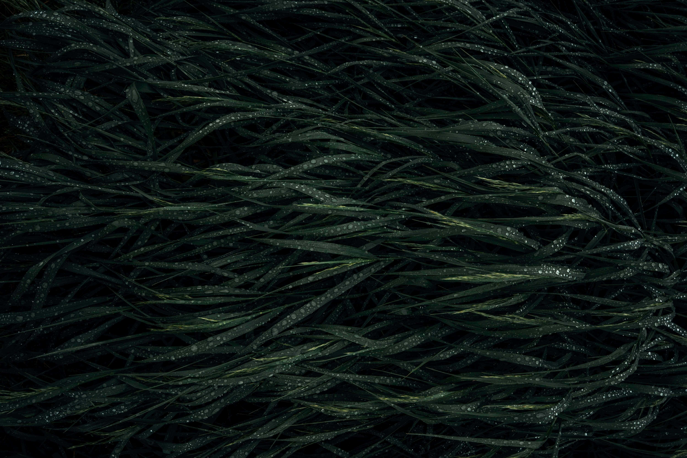
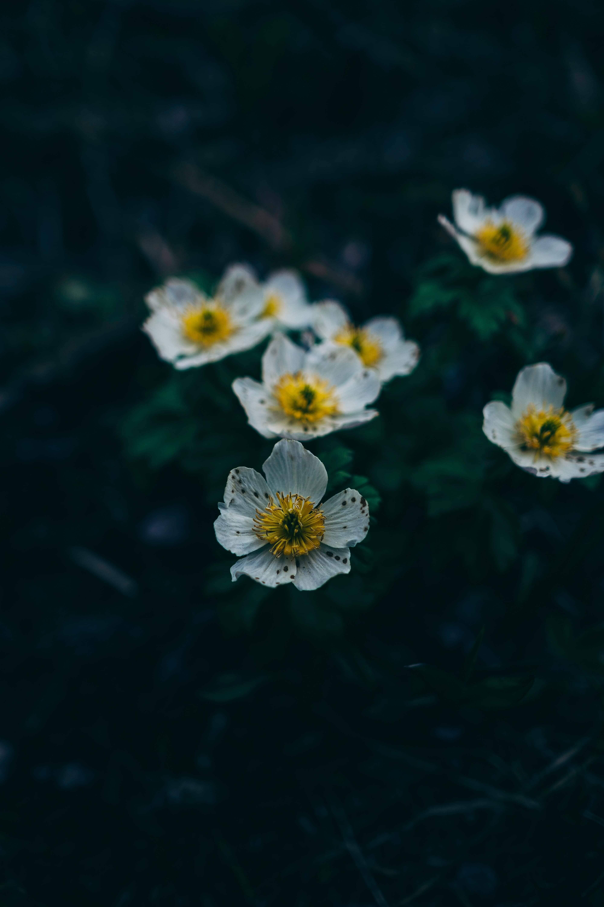

NOSOTROS
Amor a la poesía
Soy Rogelio Suleta. Amo los poemas, en general, sin discriminación de ningún tipo, formato, autor.
Uno de mis sueños frustrados es ser escritor, por eso pensé en armar este proyecto donde todos puedan recurrir a diversos poemas de diversos autores y leerlos, disfrutarlos.
Esto es para todos aquellos que disfruten de leer poesía
Galería de imágenes utilizadas en la página


